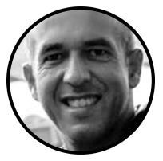

art
technology
sobre
"DAT: Design, Arte & Tecnologia" é um ciclo de conferências, conversas e
workshops. Que se vai realizar anualmente no âmbito dos cursos de
Licenciatura e Mestrado em Design e Multimédia da Faculdade de Ciências
e de Tecnologia da Universidade de Coimbra.
A primeira edição decorrerá
em Abril de 2018, e terá a duração de 2 ou 3 dias que poderão ter lugar,
em vários locais da cidade de Coimbra, como por exemplo no auditório do
Museu da Ciência, no DARQ e no DEI.
Esta acção de divulgação pública
dentro e fora da Faculdade pretende não só mostrar o trabalho de
diferentes profissionais cujo trabalho é amplamente reconhecido, como
contribuir para a divulgação do cursos, os primeiros nesta área
leccionados na Universidade de Coimbra. O programa é constituído por
convidados de diversas áreas (Design Gráfico, Tipografia, Design de
Interacção, Web Design, Arquitectura, Teoria do Design, Arte, Ilustração,
Arte computacional, Cinema, etc.)
edição 2018
Este ano vamos estar a tua espera no DAT, que se vai realizar anualmente no âmbito
dos cursos de Licenciatura e Mestrado em Design e Multimédia da Faculdade de
Ciências e de Tecnologia da Universidade de Coimbra. A primeira edição decorreu em Abril de 2018
e esperamos que esse ano vai ser maior, melhor e muito mais educativo.
Visita a nossa página de facebook da edição DAT de 2018, que foi a nossa primeira edição,
para mais informação sobre DAT 2018.
Segue o link abaixo para acesso á
pagina de facebook do DAT 2018...
DAT 2018 página de facebook.
intervenientes

11 Março - Mario Feliciano (Typedesigner)
Workshop type design DEI
12 Março - Thomas Castro (ArtEZ Institute of the Arts)
Conferencia Laboratorio Chimico, Museu da Ciência

13 Março - Luna Maurer
Workshop DARQ

local
DARQ (Departamento de Arquitectura)
Universidade de Coimbra,
R. Colégio Novo, 3000-143 Coimbra.
DEI (Departamento de Engenharia Informática)
Universidade de
Coimbra, Pólo II - Pinhal de Marrocos, 3030-290 Coimbra.
Laboratorio Chimico
Universidade de Coimbra, Museu da Ciência
3000-272, Coimbramuseudaciencia.org, Tel: 239 854 350.
contatos
Nuno Coelho:
Segue aqui para mais informação sobre Nuno Coelho!
Pedro Martins:
Ou segue aqui para mais informação sobre Pedro Martins!